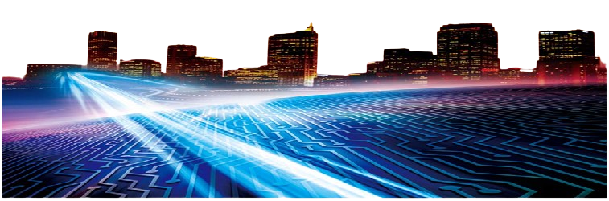
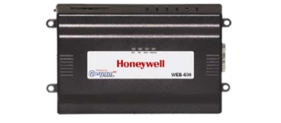
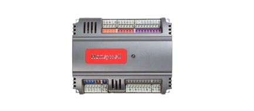
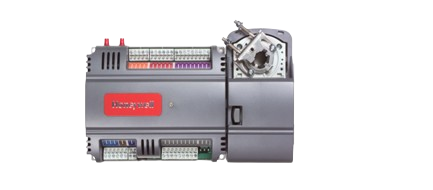
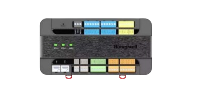
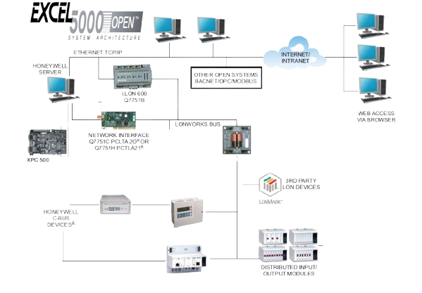
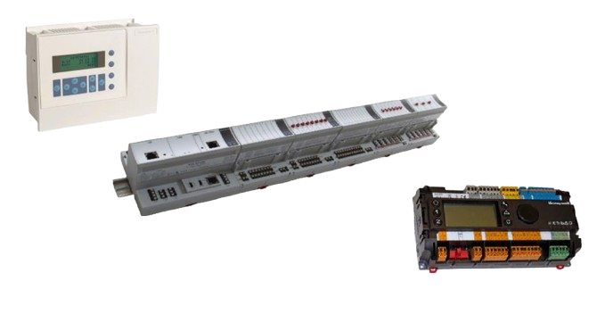

Honeywell WEBs
WEBs 楼宇管理系统
霍尼韦尔 WEBs-AX™楼宇管理系统以下简称WEBs 楼宇管理系统，以具有开创性的NiagaraAX 体系架构为核心。广泛应用于楼宇控制，工业控制，能源管理，安防管理等领域。使用霍尼韦尔的NiagaraAX 技术和WEBs系统产品，可以通过标准的Web 浏览器页面实时，安全有效的管理整个系统，同时降低成本，提高工作质量和工作效率，提升企业的竞争力。霍尼韦尔 WEBs 系统提供了一个开放的平台，可以集成不同厂商的各种设备及系统，不仅可以最大限度地保护客户现有的投资，而且也可以在需要的时候随时添加进新的设备。霍尼韦尔 WEBs 系统以其开放集成平台成为业界领跑者。
功能及应用特点
● 楼宇自动化控制
基于开放式的架构设计，整合了各种系统和设备到一个统一的平台，实施设备监测、管理与控制。
● 能源管理
通过一系列的能源管理组件控制与管理设施中的能源消耗，确保各子系统的正常高效的运行，并达到降低能耗的目的。
● 多协议集成
兼容现行的常用现场标准总线协议（例如BACnet®，LonWorks®，Modbus® 等），同时还能为非标准协议的连接提供工具软件，为已建系统提供全面的软件技术支持，实现真正意义的多系统不同设备的无缝连接。
● Web用户界面 基于Internet 的分布式网络管理架构，支持用户通过Web浏览器实现对系统的实时监控，省去传统控制系统的“前端”费用，节省了监控系统的投入和运行成本。
● 信息技术融合
通过BACnet® IP，oBIX，Niagara，SNMP，以及SMS等多种互联网信息技术，实现设备间的信息与资源共享。
● 远程访问
可通过 iPhone，ipad等智能手机或平板电脑设备随时随地访问系统。
● 系统稳定可扩展
基于Java 平台，使用Java虚拟机，每个节点都能作为独立功能的服务器，同时为多个用户提供实时数据，或连接到中央服务器实现数据汇总。可为各种标准的关系型数据库和企业级应用提供接口，当用户需要改变或扩大时，将体现出无与伦比的可靠性及可扩展性。
● 无线通讯 支持ZigBee®和Wifi无线通讯，降低安装成本，增强系统灵活性。
WEB控制器
WEB控制器 是基于Java的控制器/ 服务器产品、软件应用程序和工具的WEBs-AX™套件的成员之一，将大量设备和协议集成在统一的分布式系统中, 支持多种协议，包括LonWorks®、BACnet®、Modbus 和互联网标准。NiagaraAX 构架还提供集成的网络管理工具，支持网络互操作的设计、配置、安装和维护。
Spyder控制器
Spyder®家族系列的产品有基于LonWorks通讯，用于变风量(VAV)和通用HVAC控制的PVL0000AS，PVL4022AS, PVL4024NS, PVL6436AS 、PVL6438NS； 用于通用设备包括热交换器，辐射板，加热单元，通风单元，风机盘管和热泵等设备控制的PUL1012S / PUL4024S /PUL6438S控制器。每个控制器都包含一个主微处理器负责程序控制，还有一个微处理器负责LonWorks® 通信。
Spyder®家族系列的产品还有基于BACnet通讯，用于商用建筑中变风量(VAV)和通用HVAC控制的PVB0000AS，PVB4022AS, PVB4024NS, PVB6436AS、PVB6438NS； 用于通用设备控制的PUB1012S，PUB4024S，PUB6438S控制器。每个控制器都包含一个主微处理器负责程序控制，还有一个微处理器负责BACnet® 通信。
PUC系列控制器
PUC8445可编程通用控制器是霍尼韦尔PUC系列中支持以太网通讯的BACnet IP控制器。控制器可自由编程，适用于建筑物中的多种设备的控制；双以太网端口，同时支持星型和菊花链连接，支持多种网络拓扑架构，组网和布线都更加的灵活；自带输入/输出点，并支持通过RS-485端口连接扩展模块；满足CE，BTL，UL，RoHS认证。
Honeywell Excel5000
SymmetrE 楼宇管理系统
Honeywell SymmetrE楼宇自控管理系统广泛应用于楼宇控制领域， 特别是工业厂房系统，使用霍尼韦尔的Excel5000系统产品，可以通过系统页面实时，安全有效的管理整个系统，同时降低成本，提高工作质量和工作效率，提升企业的竞争力。
XL5000控制器
XL5000系列的产品有小型用于通用设备包括热交换器，辐射板，加热单元，通风单元和热泵等设备控制的XL50\XL100控制器，凭借极高可靠性和稳定型在工业厂房公共设备控制领域中广泛的应用。MVC80控制器为商用楼宇提供了高性价比的控制方案；XL500和XCL8010控制器是较大规模系统上的应用。
